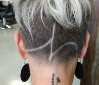
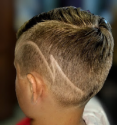
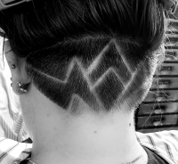
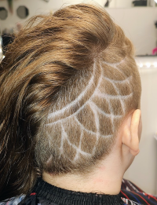
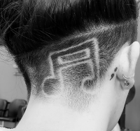
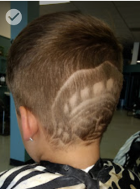

I've been a cosmetologist for around 20 years now (I obtained my licsense in 2006) and what i've loved the most has changed over the years. My Favorite thing has gone from updos to massage.. to men's cuts to clippers designs.
However one constant over the years has remained the same. That's my love of connecting with my clients and being a part of their and their family's lives. 
